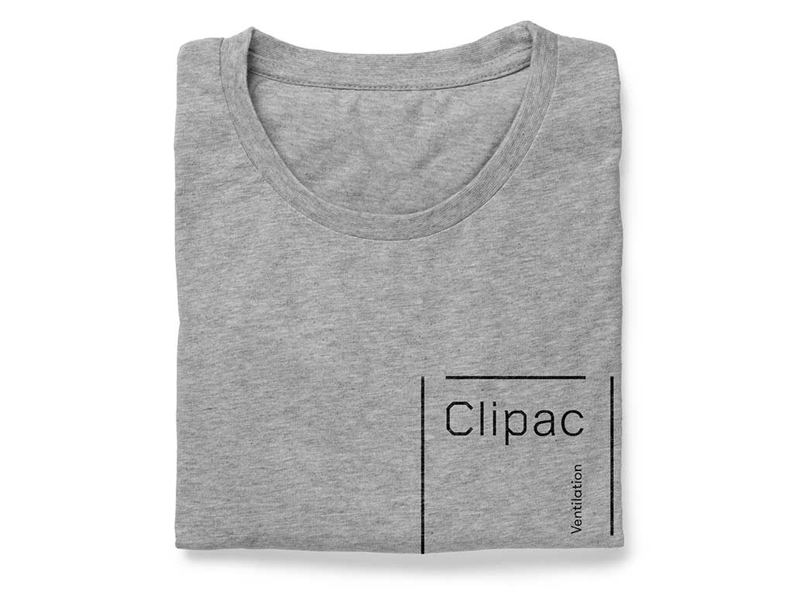

Clipac est une petite entreprise de ventilation qui se distingue par sa capacité d’offrir un service total, de l’établissement du cahier des charges à la mise en service d’une installation.
Dès le départ nous avons décidé (avec le client) d’investir dans la production du site web. Un choix qui n’allait pas de soi dans une industrie ou le web ne joue pas un rôle prépondérant. Le pari a payé cependant, puisque les commandes reçues par le site ont amorti son développement dans ses six premiers mois.
